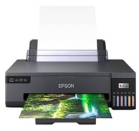
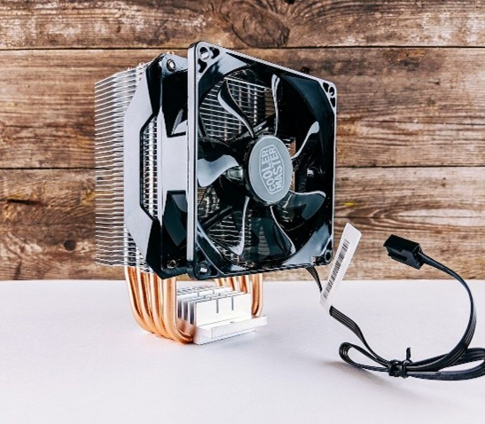
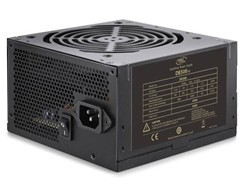

Komponen Perangkat Input
Perangkat yang digunakan untuk memasukkan data atau perintah ke dalam komputer.


Komponen Perangkat Proses
Komponen yang berperan dalam pemrosesan dan pengolahan data pada komputer.


Komponen Media Penyimpanan
Perangkat yang digunakan untuk menyimpan data dan informasi pada komputer.


Komponen Perangkat Output
Perangkat yang digunakan untuk menampilkan hasil pengolahan data komputer.


Printer
Perangkat output untuk menghasilkan informasi dalam bentuk cetakan.
SelengkapnyaKomponen Perangkat Pendingin
Komponen yang membantu menjaga suhu sistem komputer agar tetap stabil.

Fan (Kipas Pendingin)
Komponen yang membantu mengeluarkan panas dari dalam sistem komputer.
SelengkapnyaKomponen Perangkat Catu Daya
Komponen yang menyediakan dan menyalurkan daya listrik kepada perangkat komputer.

PSU (Power Supply Unit)
Komponen yang menyediakan energi listrik bagi berbagai komponen komputer.
Selengkapnya